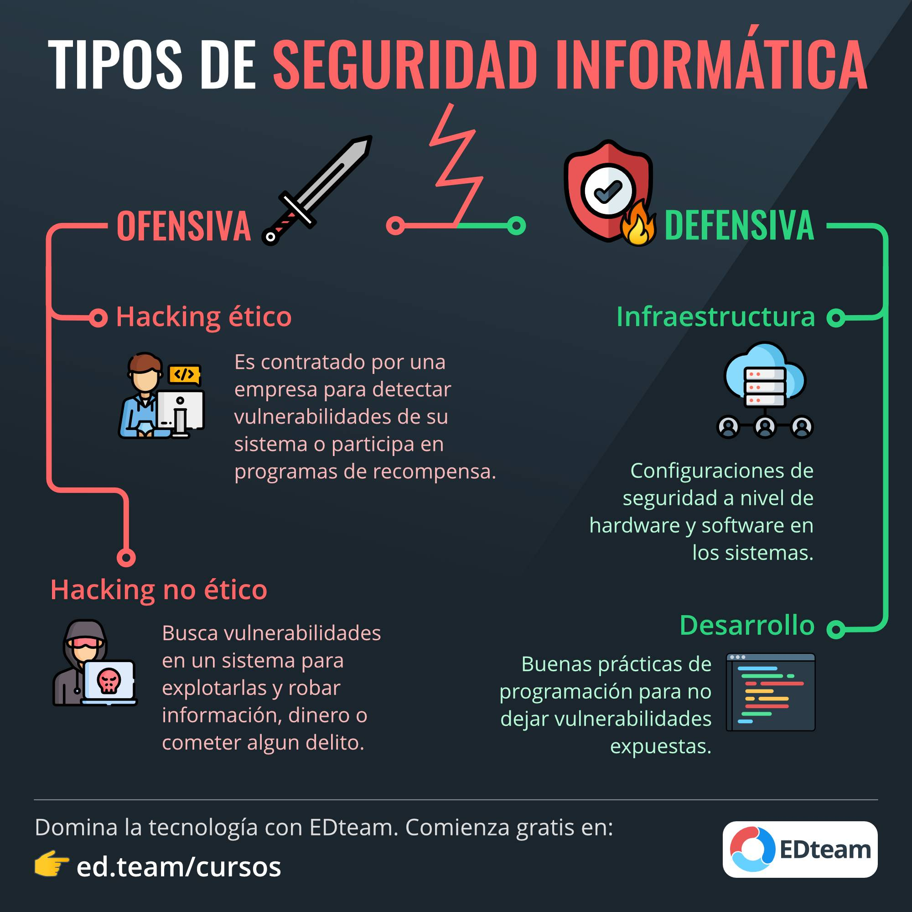
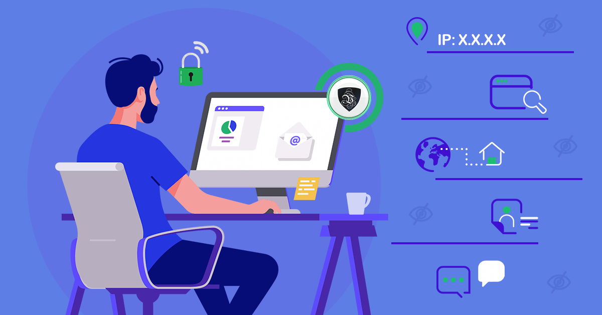

Seguridad Informática
¿Quién se encarga de la seguridad?
La seguridad informática es tarea de todos, tanto de los programadores como de los administradores de sistemas, y aunque no lo parezca el usuario como tal es el eslabón más débil. Por su parte la seguridad informática se puede clasificar en 2 áreas:
Tipos de Hackers
- White Hat: En este caso se hace referencia a aquellos que hacen de la ética su bandera y, por tanto, trabajan protegiendo sistemas. Suele ocupar puestos en empresas de seguridad informática y su principal función es la de encontrar agujeros en los sistemas.
- Black Hat: Este perfil, también conocido como cracker, usa su habilidad con la informática para romper sistemas de seguridad y tener acceso a zonas restringidas, infectar redes o simplemente hacerse con ellas; se encargan de suplantar identidades, clonar tarjetas, etc. En este caso, la ética brilla por su ausencia y lo hacen para beneficio personal o de otros. El objetivo en un 99,99% de los casos, lucrarse.
- Grey Hat: En esta vida muchos piensan que no se puede ser de blancos o negros, que hay grises. Pues en este caso, el perfil del que hablamos es justo eso, un gris, una mezcla de los otros dos, ya que son capaces de irrumpir de manera ilegal en los sistemas, pero siempre con buenas intenciones, o casi. Es decir, se meten en los sistemas de seguridad de compañías para después postularse como los “solucionadores” y repararlos. Otra de las cosas que hacen habitualmente, es obtener información de gran importancia, pero de un modo ilegal, para después hacérsela llegar a la opinión pública.
Lenguajes utilizados
Principalmente Python, ya que te permite automatizar procesos, por ejemplo podrías crear un script automático que recorra un sitio para buscar vulnerabilidades. También es bueno conocer sobre C, bash y los lenguajes en que están basados las aplicaciones que vas a auditar, asimismo SQL para las bases de datos.
Elementos fundamentales
Un navegador seguro
Para la mayoría de nosotros, nuestro navegador web es Internet. Es nuestro medio de acceso directo a la información y el contenido en línea para trabajar, divertirnos, investigar, para nuestras finanzas, para comunicarnos y para casi todo lo demás que hacemos en línea.
Afortunadamente, en su mayor parte, los navegadores más conocidos son bastante seguros. Seamos usuarios de Firefox, Edge, Chrome, Safari o incluso Opera, sus funciones integradas de seguridad son suficientes para servir a nuestras necesidades básicas. Sin embargo, esta afirmación solo es válida para los navegadores completamente actualizados; por eso, aprende a buscar actualizaciones. Házlo con frecuencia o bien activa la actualización automática del navegador que has elegido.
En octubre de 2018, Google introdujo nuevas medidas de seguridad contra la instalación de extensiones maliciosas para Chrome, lo que se tradujo en una caída del 89 % en el transcurso del año. A pesar de ello, sigue siendo importante ser cuidadoso a la hora de instalar extensiones. Comprueba si alguien ha informado sobre algún problema con una extensión antes de instalarla.
Algunos navegadores seguros son:
Google Chrome
Safari
Mozilla Firefox
Opera
Microsoft Edge
Bloqueador de publicidad
La publicidad puede ser un aliado sorprendentemente eficaz para el malware y los ciberataques, como PayLeak, que se hizo pasar por un anuncio legítimo para atraer a los usuarios a sitios web fraudulentos. Se trataba de un ataque contra los Wallet de Apple Pay.
Este tipo de ataque es conocido como malvertising, en el que un anuncio aparentemente inocuo nos redirige silenciosamente a un sitio malicioso que intenta infectarnos con cualquier tipo de cosas, desde spyware hasta ransomware.
Al usar un bloqueador de anuncios, no debemos olvidarnos de incluir en la lista blanca nuestros sitios web de confianza para permitir que nuestros blogs y sitios de noticias favoritos puedan mantenerse gracias a la publicidad legítima.
Antimalware
Con tantos sitios web y publicidad maliciosos y otros medios que los chicos malos utilizan para tratar de robar nuestra identidad o infectarnos con malware, necesitamos ese elemento básico de seguridad para PC: una solución antimalware. Tarde o temprano, es probable que el malware acceda a nuestro sistema, y cuando lo haga, debe eliminarse de la manera más rápida y efectiva posible.
Existen varios productos antimalware gratuitos disponibles. La mayoría de ellos ofrecen versiones «premium» con un pequeño coste. Si bien la capacidad básica de detección y eliminación de malware es la misma en ambas versiones, el sistema profesional proporciona generalmente funciones adicionales que son dignas de consideración.
Administrador y generador de contraseñas
Una contraseña fuerte es una de las medidas más básicas de seguridad, pero también la más ignorada o comprometida. En 2019, un estudio (sitio en inglés) del National Cyber Security Center (NCSC, parte del servicio de inteligencia del RR. UU. GCHQ) descubrió que más de 23 millones de usuarios de todo el mundo siguen usando: «123456».
Una buena contraseña es única, difícil de adivinar y tiene una alta entropía; es decir, el tiempo que tarda un equipo en averiguar la contraseña por fuerza bruta. La entropía de una contraseña aumenta al usar más caracteres y mezclar letras, números y símbolos. Una contraseña verdaderamente fuerte es aquella que ningún equipo actual puede descifrar en un periodo de tiempo razonable.
Probablemente todos estamos familiarizados con el gran problema de seguridad de las contraseñas. Se supone que tenemos diferentes contraseñas para cada sitio web y cada servicio que utilizamos, y se supone que cada una de esas contraseñas es larga y complicada.
Un buen y seguro administrador de contraseñas no solo solucionará el problema de la singularidad y complejidad, sino que también nos proporcionará mayor comodidad al navegar al introducir por nosotros las contraseñas.
VPN
Las VPN, redes privadas virtuales, han sido algo relativamente especializado hasta no hace mucho. Sin embargo, con las preocupaciones de privacidad en línea creciendo año tras año, y los anuncios personalizados cada vez más intrusivos y de mayor alcance, muchas personas comienzan a buscar otras formas de preservar su anonimato en línea.
Funcionan conectando el tráfico de Internet a un servidor de red centralizado antes de encaminar las peticiones hacia su destino. Esto interpone una nueva dirección IP anónima entre su dispositivo y los sitios web por los que navega. Lo que significa que, en lo que respecta a las cookies de seguimiento o a cualquier actor malicioso que monitoree nuestro tráfico, nuestras actividades pueden ser rastreadas solo hasta el servidor VPN, no hasta nosotros.
Seamos cuidadosos al elegir un proveedor de VPN, utiliza solo servicios conocidos y de confianza. Los servicios VPN de menor reputación pueden ponernos en una situación de vulnerabilidad. Si bien nuestro tráfico no será registrado y monitoreado por los sitios que visitemos, el proveedor de VPN podría guardar su propio registro y, si los propietarios de la VPN carecen de escrúpulos, podría ser vendido junto con otra información personal, poniéndonos en una situación peor que antes de comenzar a utilizar la VPN.
Copia de seguridad de datos
Ya sea a causa de malware, de daños en el hardware o de un fallo catastrófico de software, a veces nuestros dispositivos se averían y perdemos el acceso a nuestros archivos. Existen muchas formas de hacer una copia de seguridad de nuestros datos.
Podemos considerar la posibilidad de usar un almacenamiento externo, como un disco duro extraíble o de estado sólido. Estos mantienen una copia recuperable de nuestros datos a largo plazo, pero pueden suponer pérdidas de tiempo si nuestras copias de seguridad necesitan actualizaciones frecuentes. También están sujetos a daños físicos y degradación, lo que puede traducirse en costosos servicios de recuperación o pérdida permanente de datos.
También existe la opción de almacenamiento en la nube para hacer una copia de seguridad de nuestros datos. Muchos de los principales proveedores de almacenamiento en la nube, como Dropbox, OneDrive o Amazon S3, proporcionan almacenamiento gratuito limitado si no tenemos grandes necesidades.
Sin embargo, las pequeñas empresas deben considerar un servicio de copia de seguridad y recuperación especializado.
Video sobre el tema
Fuentes
Todos los derechos reservados. Alexander Oliva